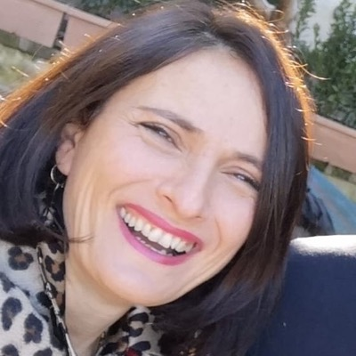

CTCristina Trombetti
Professor of Mathematical Analysis
Dipartimento di Matematica e Applicazioni “R. Caccioppoli”
Università degli Studi di Napoli Federico II
Short Vitae
Academic career
- Dec 2014 – present
- Full Professor of Mathematical Analysis, Department of Mathematics and Applications “R. Caccioppoli”, University of Naples Federico II
- Jan 2005 – Dec 2014
- Associate Professor of Mathematical Analysis, University of Naples Federico II
- Sep 1997 – Jan 2005
- Researcher in Mathematical Analysis
- 2000
- Ph.D. in Mathematics, University of Naples Federico II. Thesis: On the relaxation and Lavrentiev phenomenon for some classes of integral functionals. Advisor: Prof. Riccardo De Arcangelis
- 1995
- Degree in Mathematics (110/110 cum laude), University of Naples Federico II. Thesis: Semicontinuità e rilassamento di funzionali integrali in spazi di funzioni con derivate misure. Advisor: Prof. Riccardo De Arcangelis
Administrative roles
- Dec 2024 – present
- President of the Istituto Nazionale di Alta Matematica “Francesco Severi” (INdAM)
- Mar 2022 – Dec 2024
- Member of the Academic Senate, University of Naples Federico II
- Jan 2019 – Dec 2024
- Director of the Department of Mathematics and Applications “R. Caccioppoli”, University of Naples Federico II
- Nov 2018 – Sep 2021
- Member of the National Committee for the National Scientific Qualification (ASN)
- Sep 2017 – Sep 2021
- Member of the Scientific Council of GNAMPA-INdAM
Awards
- 2024
- Premio Dorso, sezione Università
- 2024
- Premio Cimitile “Percorsi al femminile”
- 2019
- Premio “Napoli e Donne”, sezione Università e Ricerca
Research projects
- 2025
- COST Action CA24136 “Interactions between Control Theory and Machine Learning (InterCoML)”, Secondary Proposer
- 2022
- PRIN 2022 “Partial differential equations and related geometric-functional inequalities”
- 2022
- PRIN PNRR 2022 “Linear and Nonlinear PDE’s: New directions and Applications”
- 2017
- PRIN 2017 “Direct and inverse problems for partial differential equations: theoretical aspects and applications”
- 2015
- PRIN 2015 “Partial differential equations and related analytic-geometric inequalities”
- 2013
- FIRB 2013 “Geometrical and qualitative aspects of PDE’s”
- 2012
- STAR Program 2013 “Sobolev-Poincaré Inequalities: Embedding Constants, Stability Issues, Nonlinear Eigenvalues”
- 2012
- PRIN 2012 “Equazioni alle derivate parziali di tipo ellittico e parabolico: aspetti geometrici, disuguaglianze collegate, e applicazioni”
Scientific societies
- 2021 – present
- Member of the Accademia di Scienze Fisiche e Matematiche, Società Nazionale di Scienze, Lettere ed Arti in Napoli (Classe di Scienze Matematiche)
- 2019 – present
- Member of the Accademia Pontaniana, Class I – Pure and Applied Mathematical Sciences
Editorial activity
- 2025 – present
- Editorial Board, The Journal of Geometric Analysis
- 2024 – present
- Editor in Chief, INdAM Springer Series
- 2021 – present
- Editorial Board, Advances in Continuous and Discrete Models: Theory and Applications
- 2016 – present
- Editorial Board, Ricerche di Matematica
- 2009 – present
- Editorial Board, Differential Equations and Applications (DEA)
Publications
Journal articles
- V. Amato, C. Nitsch, C. Trombetti, F. Villone. On some functionals involving torsional rigidity, principal eigenvalue and perimeter. Potential Analysis 65 (2026), 25. DOI arXiv
- E. Cristoforoni, C. Nitsch, C. Trombetti. On the classical reinforcement problem and optimisation. Nonlinear Analysis 272 (2026). DOI
- P. Acampora, E. Cristoforoni, C. Nitsch, C. Trombetti. An improved version of a spectral inequality by Payne. Journal of Differential Equations 461 (2026). DOI
- V. Amato, A. L. Masiello, C. Nitsch, C. Trombetti. On the second eigenvalue of the infinity Laplacian with Robin boundary conditions. Advances in Calculus of Variations 19 (2026). DOI
- P. Acampora, E. Cristoforoni, C. Nitsch, C. Trombetti. A spectral isoperimetric inequality on the n-sphere for the Robin-Laplacian with negative boundary parameter. The Journal of Geometric Analysis 35 (2025). DOI
- A. Celentano, C. Nitsch, C. Trombetti. A Talenti comparison result for a class of Neumann boundary value problems. Nonlinear Analysis 261 (2025). DOI
- P. Acampora, E. Cristoforoni, C. Nitsch, C. Trombetti. On the optimal shape of a thin insulating layer. SIAM J. Math. Anal. 56 n.3 (2024), 3509–3536. DOI
- A. Celentano, C. Nitsch, C. Trombetti. On a Serrin-type overdetermined problem. Milan J. Math. 92 (2024), 579–590. DOI
- V. Amato, A. Gentile, C. Nitsch, C. Trombetti. On the gradient rearrangement of functions. Mathematische Annalen 390 (2024), 4265–4281. DOI
- A. Alvino, C. Nitsch, C. Trombetti. A Talenti comparison result for solutions to elliptic problems with Robin boundary conditions. Communications on Pure and Applied Mathematics 76 (2023), 585–603. DOI
- A. Alvino, F. Chiacchio, C. Nitsch, C. Trombetti. Weighted symmetrization results for a problem with variable Robin parameter. Annali di Matematica Pura e Applicata (2023). DOI
- P. Acampora, E. Cristoforoni, C. Nitsch, C. Trombetti. A free boundary problem in thermal insulation with a prescribed heat source. ESAIM: Control, Optimisation and Calculus of Variations 29 (2023). DOI
- D. Bucur, M. Nahon, C. Nitsch, C. Trombetti. Shape optimization of a thermal insulation problem. Calculus of Variations and Partial Differential Equations 61 (2022). DOI
- V. Amato, A. L. Masiello, C. Nitsch, C. Trombetti. On the solutions to p-Poisson equation with Robin boundary conditions when p goes to +∞. Advances in Nonlinear Analysis 11 (2022), 1631–1649. DOI
- F. Della Pietra, C. Nitsch, F. Oliva, C. Trombetti. On the behaviour of the first eigenvalue of the p-Laplacian with Robin boundary conditions as p goes to 1. Advances in Calculus of Variations (2022). DOI
- F. Chiacchio, N. Gavitone, C. Nitsch, C. Trombetti. Sharp estimates for the Gaussian torsional rigidity with Robin boundary conditions. Potential Analysis (2022). DOI
- F. Della Pietra, C. Nitsch, R. Scala, C. Trombetti. An optimization problem in thermal insulation with Robin boundary conditions. Communications in Partial Differential Equations 46 (2021), no. 12, 2288–2304. DOI
- A. Alvino, F. Chiacchio, C. Nitsch, C. Trombetti. Sharp estimates for solutions to elliptic problems with mixed boundary conditions. Journal de Mathématiques Pures et Appliquées 152 (2021), 251–261. DOI
- D. Bucur, V. Ferone, C. Nitsch, C. Trombetti. Weinstock inequality in higher dimensions. Journal of Differential Geometry 118 (2021), 1–21. DOI
- F. Della Pietra, C. Nitsch, C. Trombetti. An optimal insulation problem. Mathematische Annalen 382 (2022), 745–759. DOI
- M. van den Berg, V. Ferone, C. Nitsch, C. Trombetti. On a Pólya functional for rhombi, isosceles triangles, and thinning convex sets. Revista Matemática Iberoamericana 36 (2020), no. 7, 2091–2105. DOI
- G. Floridia, C. Nitsch, C. Trombetti. Multiplicative controllability for nonlinear degenerate parabolic equations between sign-changing states. ESAIM: Control, Optimisation and Calculus of Variations 26 (2020). DOI
- D. Bucur, V. Ferone, C. Nitsch, C. Trombetti. A sharp estimate for the first Robin-Laplacian eigenvalue with negative boundary parameter. Rendiconti Lincei Matematica e Applicazioni 30 (2019), 665–676. DOI
- C. Nitsch, C. Trombetti. The classical overdetermined Serrin problem. Complex Variables and Elliptic Equations 63 n. 7-8 (2018), 1107–1122 (special issue dedicated to the 130th anniversary of Vladimir I. Smirnov). DOI
- A. Henrot, C. Nitsch, P. Salani, C. Trombetti. Optimal concavity of the torsion function. Journal of Optimization Theory and Applications 178 (2018), 26–35. DOI
- D. Bucur, V. Ferone, C. Nitsch, C. Trombetti. The quantitative Faber-Krahn inequality for the Robin Laplacian. Journal of Differential Equations 264 n. 7 (2018), 4488–4503. DOI
- A. Cianchi, V. Ferone, C. Nitsch, C. Trombetti. Poincaré trace inequalities in BV(Bⁿ) with non-standard normalization. Journal of Geometric Analysis 28 (2018), 3522–3552. DOI
- A. Cianchi, V. Ferone, C. Nitsch, C. Trombetti. Balls minimize trace constants in BV. Journal für die Reine und Angewandte Mathematik (Crelle's Journal) 725 (2017), 41–61. DOI
- V. Ferone, C. Nitsch, C. Trombetti. On the maximal mean curvature of a smooth surface. C. R. Acad. Sci. Paris 354 (2016), 891–895. DOI
- B. Brandolini, F. Chiacchio, D. Krejčiřík, C. Trombetti. The equality case in a Poincaré-Wirtinger type inequality. Rend. Lincei Mat. Appl. 27 (2016), 443–464. DOI
- M. van den Berg, V. Ferone, C. Nitsch, C. Trombetti. On Pólya's inequality for torsional rigidity and first Dirichlet eigenvalue. Integral Equations and Operator Theory 86 (2016), 579–600. DOI
- L. Brasco, C. Nitsch, C. Trombetti. An inequality à la Szegö-Weinberger for the p-Laplacian on convex sets. Communications in Contemporary Mathematics 18 (2016), 155–173. DOI
- B. Brandolini, F. Chiacchio, A. Henrot, C. Trombetti. Existence of minimizers for eigenvalues of the Dirichlet-Laplacian with a drift. Journal of Differential Equations 259 (2015), 707–727. DOI
- B. Brandolini, F. Della Pietra, C. Nitsch, C. Trombetti. Symmetry breaking in a constrained Cheeger type isoperimetric inequality. ESAIM: Control, Optimisation and Calculus of Variations 21 (2015), 359–371. DOI
- L. Esposito, B. Kawohl, C. Nitsch, C. Trombetti. The Neumann eigenvalue problem for the ∞-Laplacian. Rend. Lincei Mat. Appl. 26 (2015), 119–134. DOI
- B. Brandolini, F. Chiacchio, C. Trombetti. Optimal lower bounds for eigenvalues of linear and nonlinear Neumann problems. Proceedings of the Royal Society of Edinburgh Sect. A 145 (2015), 31–45. DOI
- V. Ferone, C. Nitsch, C. Trombetti. On a conjectured reverse Faber-Krahn inequality for a Steklov-type Laplacian eigenvalue. Communications on Pure and Applied Analysis 1 (2015), 63–81. DOI
- B. Brandolini, F. Chiacchio, C. Trombetti. Symmetrization for singular semilinear elliptic equations. Annali di Matematica Pura e Applicata 193 (2014), 389–404. DOI
- B. Brandolini, N. Gavitone, C. Nitsch, C. Trombetti. Characterization of ellipsoids through an overdetermined boundary value problem of Monge-Ampère type. Journal de Mathématiques Pures et Appliquées 101 (2014), 828–841. DOI
- B. Brandolini, F. Chiacchio, F. C. Cîrstea, C. Trombetti. Local behaviour of singular solutions for nonlinear elliptic equations in divergence form. Calculus of Variations and Partial Differential Equations 48 (2013), 367–393. DOI
- B. Brandolini, F. Chiacchio, A. Henrot, C. Trombetti. An optimal Poincaré-Wirtinger inequality in Gauss space. Mathematical Research Letters 20 (2013), 449–457. DOI
- B. Brandolini, F. Chiacchio, C. Trombetti. A sharp lower bound for some Neumann eigenvalues of the Hermite operator. Differential and Integral Equations 26 (2013), 639–654. DOI
- L. Esposito, C. Nitsch, C. Trombetti. Best constants in Poincaré inequalities for convex domains. Journal of Convex Analysis 20 (2013), 253–264. DOI
- A. Mercaldo, J. D. Rossi, S. Segura de León, C. Trombetti. Behaviour of p-Laplacian problems with Neumann boundary conditions when p goes to 1. Communications on Pure and Applied Analysis 12 (2013), 253–267. DOI
- L. Esposito, V. Ferone, B. Kawohl, C. Nitsch, C. Trombetti. The longest shortest fence and sharp Poincaré-Sobolev inequalities. Archive for Rational Mechanics and Analysis 206 (2012), 821–851. DOI
- V. Ferone, C. Nitsch, C. Trombetti. A remark on optimal weighted Poincaré inequalities for convex domains. Rendiconti Lincei Matematica e Applicazioni 23 (2012), 467–475. DOI
- A. Mercaldo, J. D. Rossi, S. Segura de León, C. Trombetti. On the behaviour of solutions to the Dirichlet problem for the p(x)-Laplacian when p(x) goes to 1 in a subdomain. Differential and Integral Equations 25 (2012), 53–74. DOI
- B. Brandolini, P. Freitas, C. Nitsch, C. Trombetti. Sharp estimates and saturation phenomena for a nonlocal eigenvalue problem. Advances in Mathematics 228 (2011), 2352–2365. DOI
- B. Brandolini, C. Nitsch, C. Trombetti. Shape optimization for Monge-Ampère equations via domain derivative. Discrete and Continuous Dynamical Systems Ser. S 4 (2011), 825–831. DOI
- B. Brandolini, C. Nitsch, C. Trombetti. An upper bound for nonlinear eigenvalues on convex domains by means of the isoperimetric deficit. Archiv der Mathematik 94 (2010), 391–400. DOI
- A. Mercaldo, J. D. Rossi, S. Segura de León, C. Trombetti. Anisotropic p-q Laplacian equations when p goes to 1. Nonlinear Analysis: T.M.A. 73 (2010), 3546–3560. DOI
- B. Brandolini, F. Chiacchio, C. Trombetti. Sharp estimates for eigenfunctions of a Neumann problem. Communications in Partial Differential Equations 34 (2009), 1317–1337. DOI
- B. Brandolini, C. Nitsch, C. Trombetti. New isoperimetric estimates for solutions to Monge-Ampère equations. Annales de l'Institut Henri Poincaré Analyse Non Linéaire 26 (2009), 1265–1275. DOI
- B. Brandolini, C. Nitsch, P. Salani, C. Trombetti. Stability of radial symmetry for a Monge-Ampère overdetermined problem. Annali di Matematica Pura e Applicata 188 (2009), 445–453. DOI
- B. Brandolini, C. Nitsch, P. Salani, C. Trombetti. A note on the Serrin problem in the plane. Matematiche (Catania) 63 (2008), 83–92.
- A. Mercaldo, S. Segura de León, C. Trombetti. On the solutions to 1-Laplacian equation with L¹ data. Journal of Functional Analysis 256 (2009), 2387–2416. DOI
- B. Brandolini, C. Nitsch, P. Salani, C. Trombetti. Serrin type overdetermined problems: an alternative proof. Archive for Rational Mechanics and Analysis 190 (2008), 267–280. DOI
- B. Brandolini, C. Nitsch, P. Salani, C. Trombetti. On the stability of the Serrin problem. Journal of Differential Equations 245 (2008), 1566–1583. DOI
- A. Cianchi, L. Esposito, N. Fusco, C. Trombetti. A quantitative Pólya-Szegö principle. Journal für die Reine und Angewandte Mathematik (Crelle's Journal) 614 (2008), 153–189. DOI
- F. C. Cîrstea, C. Trombetti. On the Monge-Ampère equation with boundary blow-up: existence, uniqueness and asymptotics. Calculus of Variations and Partial Differential Equations 31 (2008), 167–186. DOI
- L. Greco, C. Sbordone, C. Trombetti. A note on planar homeomorphisms. Rendiconti dell'Accademia delle Scienze Fisiche e Matematiche 75 (2008), 53–59.
- A. Mercaldo, S. Segura de León, C. Trombetti. On the behaviour of the solutions to p-Laplacian equations as p goes to 1. Publicacions Matemàtiques 52 (2008), 377–411. DOI
- A. L. Amadori, B. Brandolini, C. Trombetti. Viscosity solutions of the Monge-Ampère equation with the right hand side in Lᵖ. Rendiconti Lincei Matematica e Applicazioni 18 (2007), 221–233. DOI
- B. Brandolini, M. Cicalese, C. Nitsch, C. Trombetti. A sharp estimate of the extinction time for the mean curvature flow. Applied Mathematics Letters 20 (2007), 551–557. DOI
- B. Brandolini, F. Chiacchio, C. Trombetti. Hardy type inequalities and Gaussian measure. Communications on Pure and Applied Analysis 6 (2007), 411–428. DOI
- B. Brandolini, F. Chiacchio, C. Trombetti. Some remarks on nonlinear elliptic problems involving Hardy potentials. Houston Journal of Mathematics 33 (2007), 617–630.
- B. Brandolini, C. Trombetti. Comparison results for Hessian equations via symmetrization. Journal of the European Mathematical Society 9 (2007), 561–575. DOI
- B. Brandolini, C. Trombetti. A symmetrization result for Monge-Ampère type equations. Mathematische Nachrichten 280 (2007), 467–478. DOI
- L. Esposito, C. Trombetti. Steiner symmetrization: a weighted version of Pólya-Szegö principle. NoDEA Nonlinear Differential Equations and Applications 14 (2007), 219–231. DOI
- L. Greco, C. Sbordone, C. Trombetti. A note on W¹·¹ planar homeomorphisms. Rend. Acc. Sc. Fis. Mat. Napoli LXXIII (2006), 419–421.
- L. Esposito, G. Mingione, C. Trombetti. On the Lipschitz regularity for certain elliptic problems. Forum Mathematicum 18 (2006), 263–292. DOI
- L. Esposito, N. Fusco, C. Trombetti. A quantitative version of the isoperimetric inequality: the anisotropic case. Annali della Scuola Normale Superiore di Pisa, Classe di Scienze 4 (2005), 619–651. DOI
- L. Esposito, C. Trombetti. Convex symmetrization and Pólya-Szegö inequality. Nonlinear Analysis: T.M.A. 56 (2004), 43–62. DOI
- M. Cicalese, C. Trombetti. Asymptotic behaviour of solutions to p-Laplacian equation. Asymptotic Analysis 35 (2003), 27–40. DOI
- F. Murat, C. Trombetti. A chain rule formula for the composition of a vector-valued function by a piecewise smooth function. Bollettino della Unione Matematica Italiana 6 (2003), 581–595.
- N. Grenon, C. Trombetti. Existence results for a class of nonlinear elliptic problems with p-growth in the gradient. Nonlinear Analysis: T.M.A. 52 (2003), 931–942. DOI
- C. Trombetti. Non-uniformly elliptic equations with natural growth in the gradient. Potential Analysis 18 (2003), 391–404. DOI
- L. Boccardo, S. Segura de León, C. Trombetti. Bounded and unbounded solutions for a class of quasi-linear elliptic problems with a quadratic gradient term. Journal de Mathématiques Pures et Appliquées 80 (2001), 919–940. DOI
- N. Fusco, G. Mingione, C. Trombetti. Regularity of minimizers for a class of anisotropic free discontinuity problems. Journal of Convex Analysis 8 (2001), 349–367. DOI
- R. De Arcangelis, C. Trombetti. On the Lavrentieff phenomenon for some classes of Dirichlet minimum problems. Journal of Convex Analysis 7 (2000), 271–297. DOI
- C. Trombetti. Existence and regularity for a class of non-uniformly elliptic equations in two dimensions. Differential and Integral Equations 13 (2000), 687–706. DOI
- C. Trombetti. Rilassamento e fenomeno di Lavrentiev per alcune classi di funzionali integrali. Bollettino dell'Unione Matematica Italiana A III (2000), 411–413.
- R. De Arcangelis, C. Trombetti. On the relaxation of some classes of Dirichlet minimum problems. Communications in Partial Differential Equations 24 (1999), 975–1006. DOI
- C. Trombetti. Existence of minimizers for a class of anisotropic free discontinuity problems. Annali di Matematica Pura e Applicata 4 (1999), 277–292. DOI
- C. Trombetti. On the lower semicontinuity and relaxation properties of certain classes of variational integrals. Rendiconti dell'Accademia Nazionale delle Scienze detta dei XL, Memorie di Matematica e Applicazioni 21 (1997), 25–51.
Proceedings
- B. Brandolini, M. Cicalese, C. Nitsch, C. Trombetti. Some remarks on the extinction time for the mean curvature flow. Matematiche LX (2005), Fasc. II, 411–417.
- B. Brandolini, C. Trombetti. Hessian equations and symmetrization. Ricerche di Matematica 54 (2005), 513–519.
- C. Trombetti. On a class of Monge-Ampère type equations with lower order terms. Bollettino dell'Unione Matematica Italiana A 8 (2005), 629–637.
Teaching & PhD supervision
Courses
- Mathematical Analysis — for students in Mathematics
- Real Analysis — for students in Mathematics
Course materials and office hours: teaching page on docenti.unina.it.
PhD students
Paolo Acampora (PhD completed), Vincenzo Amato (PhD completed), Rosa Barbato (PhD completed), Gloria Paoli (PhD completed), Rossano Sannipoli (PhD completed), Leonardo Trani (PhD completed), Francesca De Giovanni.
Contact
Dipartimento di Matematica e Applicazioni “R. Caccioppoli”
Università degli Studi di Napoli Federico II
Via Cintia, Monte S. Angelo
I-80126 Napoli, Italy
Email: cristina@unina.it
Phone: +39 081 675669
Fax: +39 081 7662106
ORCID: 0000-0001-8466-9905